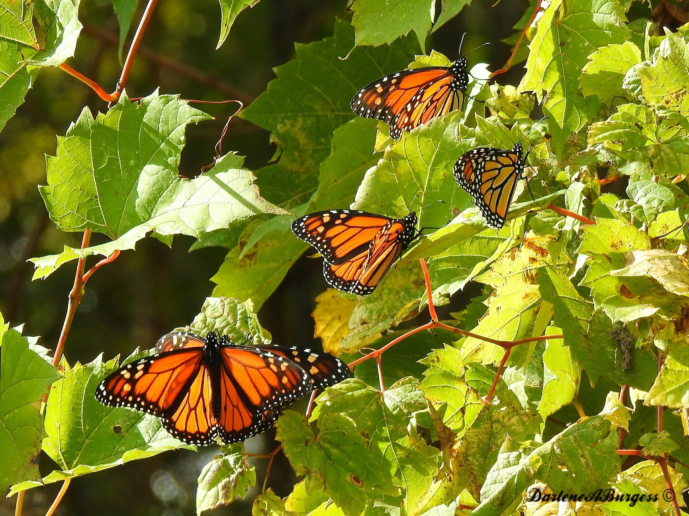
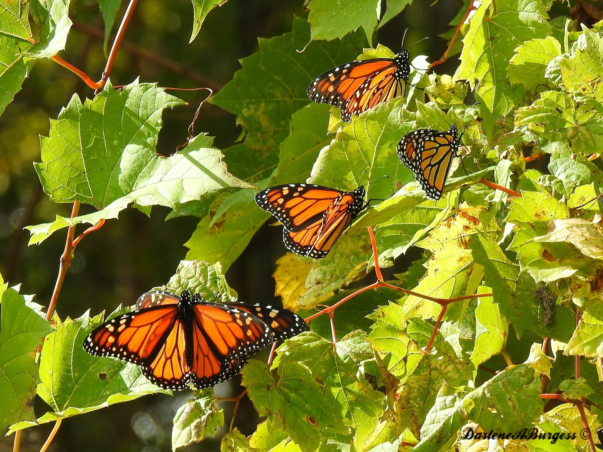

This image was captured on April 4th at the Peggy Norberten Nature Museum located in Lincoln Park, a northern Chicago Suburb. It was taken inside the museum's Butterfly Garden and was shot on a Canon AE-1 35mm film. The museum is a popular tourist destination and has exhibits for all ages to enjoy. A link to the museum's website can be found on the bottom of this page.
Museum Website